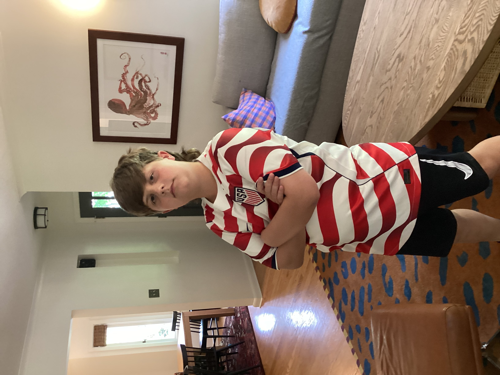
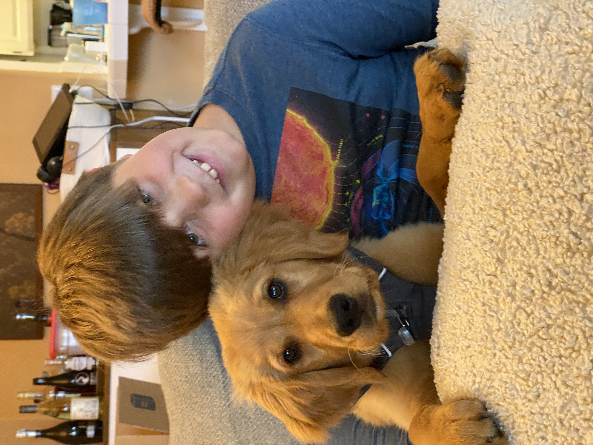

Some pictures


D73ADC39-C329-4D77-AFE7-AF6B5AE14DD6.jpeg
Photo 4
I'm into Soccer, (or football for some of you) dogs, (I have my own dog named Ozzie as shown in some of my pictures,) surfing, and so much more.

I'm 10 years old, going into 5th Grade. I go to Rieke Elementary in Portland, Oregon. We moved into a new house 2 years ago on the 4th of July. This is my first time trying to code. My dad is a data analyst who works for Kamehameha Schools.
